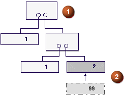
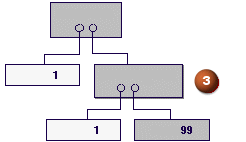

层叠处理示例
以下是层叠处理的例子。
|
向上层叠示例 |
|
 1) 克隆默认设置指定为保持 2) 异常的默认组件2将被组件99替换 |
|
 3) 系统自动创建子装配克隆以使组件2可以被替换，建议用户使用。 |
|
向下层叠示例 |
|
1) 克隆默认设置指定为克隆 2) 子装配上的异常操作保持 3) 引发组件1与组件2的冲突 克隆默认设置无法应用除非子装配种子已被修改 |
|
4) 解决：自动替换部件 |